JAVA EE 7
Criando aplicativos da Web com o Spring Web MVC
O Spring Web MVC forneceu a arquitetura Model-View-Controller e uma infinidade de componentes que, juntos, ajudam a desenvolver aplicativos da Web fracamente acoplados, construídos no contêiner Spring IoC.
A estrutura Web MVC da Spring, como muitas outras estruturas MVC da web, é orientada por solicitações, projetada em torno de um servlet central chamado DispatcherServlet que envia solicitações aos controladores e oferece outra funcionalidade que facilita o desenvolvimento de aplicativos da web. DispatcherServlet implementa um dos padrões de camada da web Java EE, chamado Front Controller.Assim, o DispatcherServlet atua como o controlador frontal da estrutura Spring MVC, e toda solicitação da Web precisa passar por ela para poder controlar e administrar todo o processo de manipulação de solicitações. O fluxo de trabalho de processamento de solicitação do Spring Web MVC DispatcherServlet é ilustrado na Figura abaixo.
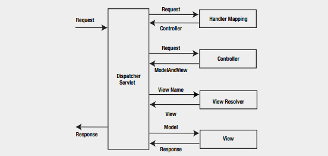Seguindo a Figura acima, a visão geral de alto nível do fluxo de trabalho é a seguinte:
- 1. O cliente envia uma solicitação ao contêiner da Web na forma de uma solicitação HTTP.
- 2. DispatcherServlet intercepta a solicitação para descobrir os mapeamentos de manipulador apropriados.
- 3. Com a ajuda dos mapeamentos de manipulador assim descobertos, o DispatcherServlet envia a solicitação para o controlador apropriado.
- 4. O controlador processa a solicitação e retorna o modelo e exibe os objetos para DispatcherServlet na forma de uma instância ModelAndView.
- 5. DispatcherServlet então resolve a View (que pode ser JSP, FreeMarker, Velocity etc.), consultando o objeto ViewResolver.
- 6. A exibição selecionada é então renderizada de volta ao cliente.
DispatcherServlet é o coração da estrutura do Spring Web MVC, mas antes de mergulhar no DispatcherServlet, primeiro você deve examinar o ApplicationContext em um aplicativo da web. Como mencionado anteriormente, um aplicativo Web possui seu próprio WebApplicationContext especializado que deve ser carregado antes que o DispatcherServlet seja inicializado. Quando o aplicativo Spring Web MVC é iniciado e antes que o aplicativo Web esteja pronto para atender às solicitações, o WebApplicationContext e o DispatcherServlet entram em ação, conforme explicado aqui:
- 1. O contêiner de servlet inicializa o aplicativo Web e, em seguida, aciona o evento contextInitialized, que é escutado pelo ContextLoaderListener.
- 2. ContextLoaderListener cria o WebApplicationContext root.
- 3. O DispatcherServlet é inicializado, criando seu próprio WebApplicationContext e aninhando-o dentro do WebApplicationContext root.
- 4. DispatcherServlet procura componentes como ViewResolvers e HandlerMappings. Se um componente for encontrado, ele será inicializado; caso contrário, o padrão para o componente é inicializado.
WebApplication
Em aplicativos da web, o ApplicationContext usado é chamado WebApplicationContext e é um ApplicationContext especializado que conhece o ambiente do servlet. É o ApplicationContext root em um aplicativo Web e deve ser carregado antes que o DispatcherServlet seja inicializado para garantir que todos os serviços, como a fonte de dados, estejam disponíveis e sejam requeridos pelo aplicativo Web. WebApplicationContext é configurado no arquivo web.xml usando ContextLoaderListener, conforme ilustrado abaixo:
org.springframework.web.context.ContextLoaderListener
Por padrão, ContextLoaderListener carrega o arquivo de contexto do aplicativo armazenado no seu diretório WEB-INF. Esse local pode ser substituído, definindo o parâmetro de contexto ConfigLocation de contexto em web.xml, conforme mostrado no ntrecho de código a seguir:
contextConfigLocation classpath:service-context.xml classpath:data-access-context.xml
Neste ponto, a configuração do WebApplicationContext no web.xml se parece com este código:
contextConfigLocation classpath:service-context.xml classpath:data-access-context.xml org.springframework.web.context.ContextLoaderListener
ContextLoaderListener, por padrão, procura um arquivo /WEB-INF/applicationContext.xml se você não especificar um <context-param> denominado contextConfigLocation .
Agora que você sabe como configurar o WebApplicationContext em um aplicativo Web, podemos passar para o segundo objeto, DispatcherServlet, configurado no arquivo web.xml.
O DispatcherServlet
Como qualquer servlet, o DispatcherServlet precisa ser configurado no web.xml para poder manipular solicitações. A configuração e o uso do DispatcherServlet exige o seguinte:
- 1. Você deve indicar ao contêiner para carregar o DispatcherServlet e mapeá-lo para padrões de URL.
- 2. Depois que o DispatcherServlet é carregado, ele cria seu próprio org.springframework.web.context.WebApplicationContext.
- 3. O DispatcherServlet detecta os componentes SpringMVC neste contexto de aplicativo e, se não for encontrado, utilizará o padrão. Esses componentes SpringMVC e seus padrões serão explicados mais adiante. .
- 4. O DispatcherServlet, em seguida, delega tarefas para cada um dos componentes do SpringMVC (ou seus padrões), dependendo da solicitação.
DispatcherServlet cria seu próprio WebApplicationContext, que contém os componentes específicos da Web, como Controllers e ViewResolver. Esse WebApplicationContext é aninhado dentro o WebApplicationContext root, carregado antes da inicialização do DispatcherServlet, para garantir que os componentes da Web no WebApplicationContext do DispatcherServlet possam encontrar suas dependências.
DispatcherServlet, como qualquer outro servlet, é declarado no arquivo web.xml do seu aplicativo da web. Você precisa mapear as solicitações que deseja que o DispatcherServlet manipule, usando um mapeamento de URL no mesmo arquivo web.xml. O código a seguir ilustra uma declaração e mapeamento DispatcherServlet.
<web-app> <servlet> <servlet-name>bookstore</servlet-name> <servlet-class>org.springframework.web.servlet.DispatcherServlet</servlet-class> <load-on-startup>1</load-on-startup> </servlet> <servlet-mapping> <servlet-name>bookstore</servlet-name> <url-pattern>/bookstore/*</url-pattern> </servlet-mapping> </web-app>
Em um Servlet 3.0 e em um ambiente mais recente, você também pode usar o WebApplicationInitializer, uma interface fornecida pela estrutura Spring MVC, para configurar o contêiner do servlet programaticamente. O próximo código ilustra o programa equivalente do exemplo web.xml anterior.
public class ExampleWebApplicationInitializer implements WebApplicationInitializer {
@Override
public void onStartup(ServletContext container) {
ServletRegistration.Dynamic registration = container.addServlet("dispatcher",
new DispatcherServlet());
registration.setLoadOnStartup(1);
registration.addMapping("/bookstore/*");
}
}
Como mencionado anteriormente, DispatcherServlets pesquisa os componentes SpringMVC a partir do WebApplicationContext criado e, se não encontrado, usa o padrão. Esses componentes do Spring MVC são expressos como interfaces. A Tabela abaixo fornece uma visão geral de todos os principais tipos de componentes envolvidos no fluxo de trabalho de processamento de solicitações.
| Tipo de Bean | Explanação |
|---|---|
| HandlerMapping | Mapeia solicitações recebidas para manipuladores e interceptadores |
| HandlerAdapter | Para estender o DispatcherServlet para personalizar o fluxo de trabalho da web |
| HandlerExceptionResolver | Mapeia exceções para visualizações |
| ViewResolver | Resolve nomes de vistas lógicas para vistas reais |
| LocaleResolver | Resolve o código de idioma que um cliente está usando para visualizações internacionalizadas |
| ThemeResolver | Resolve temas para personalizar layouts |
| MultipartResolver | Analisa multipartes para upload de arquivos |
| FlashMapManager | Suporta FlashMap para transmitir atributos de uma solicitação para outra |
Os componentes Spring MVC do DispatcherServlet usam o Spring MVC que precisam ser configurados no WebApplicationContext para processar solicitações. No entanto, se você não configurar esses componentes, o Spring Web MVC usará o padrão. A próxima Tabela lista a implementação padrão dos componentes.
| Componente | Implementação padrão |
|---|---|
| MltipartResolver | Nenhum padrão; configuração explícita necessária |
| LocaleResolver | AcceptHeaderLocaleResolver |
| ThemeResolver | FixedThemeResolver |
| HandlerMapping | BeanNameUrlHandlerMapping - DefaultAnnotationHandlerMapping |
| HandlerAdapter | HttpRequestHandlerAdapter SimpleControllerHandlerAdapter AnnotationMethodHandlerAdapter |
| HandlerExceptionResolver | AnnotationMethodHandlerExceptionResolver ResponseStatusExceptionResolver DefaultHandlerExceptionResolver |
| RequestToViewNameTranslator | DefaultRequestToViewNameTranslator |
| ViewResolver | InternalResourceViewResolver |
| FlashMapManager | SessionFlashMapManager |
Introdução a um aplicativo Spring Web MVC
Nesta seção, mostrarei as etapas de criação de um aplicativo Spring MVC Ola Mundo usando o Spring Tool Suite (um IDE baseado em Eclipse). Você aprenderá os conceitos fundamentais do Spring MVC ao criar o aplicativo de amostra. Todos os códigos utilizado aqui estão no reposítorio do git que poderão ser acessado no final da página.
As ferramentas usadas neste aplicativo incluem o seguinte:
- Spring Framework 4.2.4 a versão atual é de 5
- Spring Tool Ide 3.9.2<- Atualmente está no na versão 4
- vFabric tc Server Developer Edition v3.2( baseado no Apache Tomcat otimizado para aplicações spring
O Spring Tool Suite (STS) é um IDE baseado em Eclipse que é desenvolvido e mantido ativamente pela comunidade SpringSource. O STS fornece modelos de projeto como Spring Batch, Spring Integração, Spring Persistence (Hibernate + JPA), Spring MVC e assim por diante. Além disso, o STS sempre obtém a atualização mais recente dos artefatos Spring do repositório Maven.
- Você pode optar por baixar e instalar o STS de uma das três maneiras:
- Faça o download e instale o STS no programa de instalação.
- Instale o STS através de uma atualização do Eclipse.
- Faça o download e extraia o arquivo zip.
Start STS no seu próprio workspace. Do menu principal, select File ➤New ➤Spring Legacy Project.
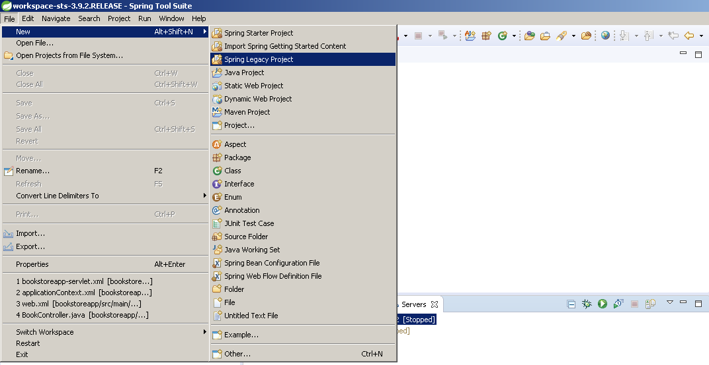
Após clicar em Spring Legacy Project adcione o nome do projeto e selecione Spring MVC Project:
- O nome do projeto :olamundo
- Top-level package: com.alpis.olamundo
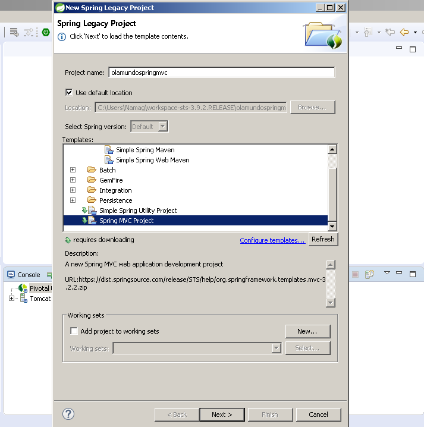
Clique em Avançar, que requer o download de uma atualização do modelo.
Clique em Sim para baixar a atualização, que deve abrir a caixa de diálogo New Spring MVC Project.
Clique em Concluir e o STS criará um projeto baseado no Spring MVC com alguns padrões para o controlador, visualizações e configuração. Ainda não escrevemos nenhuma linha de código, mas o aplicativo está pronto para ser implantado e executado.
Clique com o botão direito do mouse na visualização Servidores e selecione New ➤Server
Na caixa de diálogo Novo servidor, selecione VMware ➤VMware vFabric tc Server ..., conforme mostrado na Figura abaixo
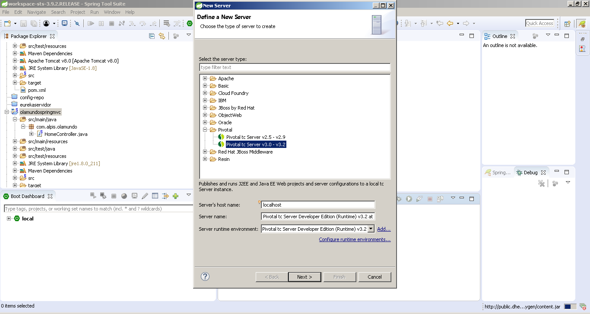
Clique em Avançar. Na próxima tela, mantenha a opção "Criar nova instância" selecionada
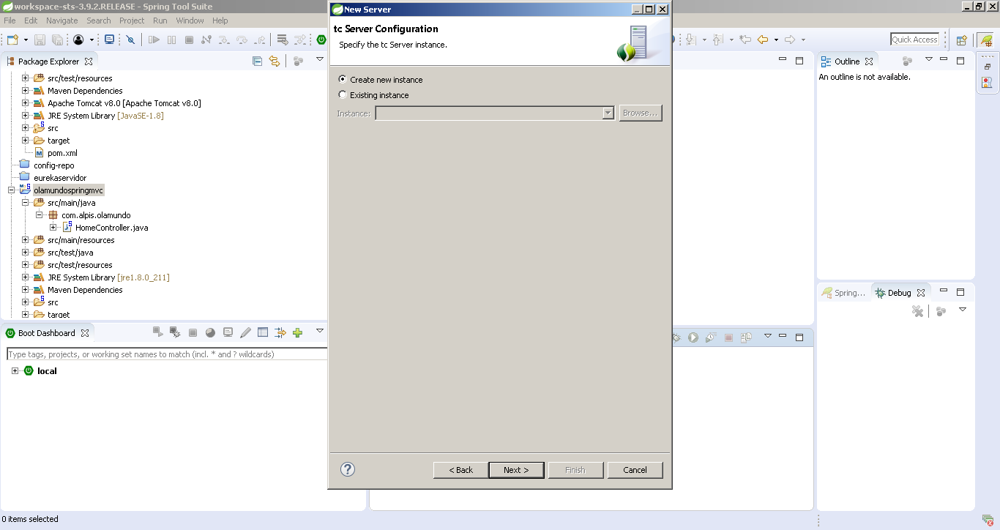
Clique em Avançar. Na próxima tela, digite tcServer como nome para a nova instância e selecione base como modelo (veja a Figura abaixo).
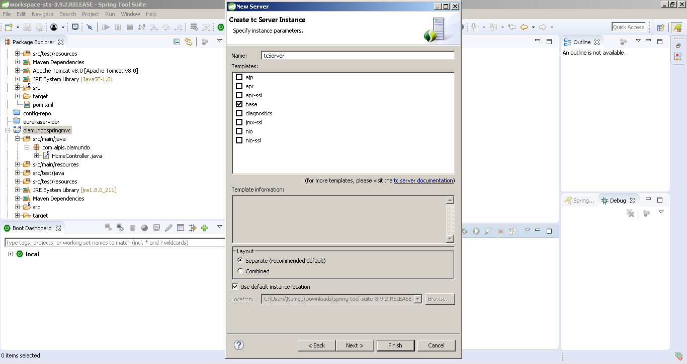
Adicione olamundo e clique em Finish para concluir a configuração do servidor. Agora implante adcionando o aplicativo olamundo.
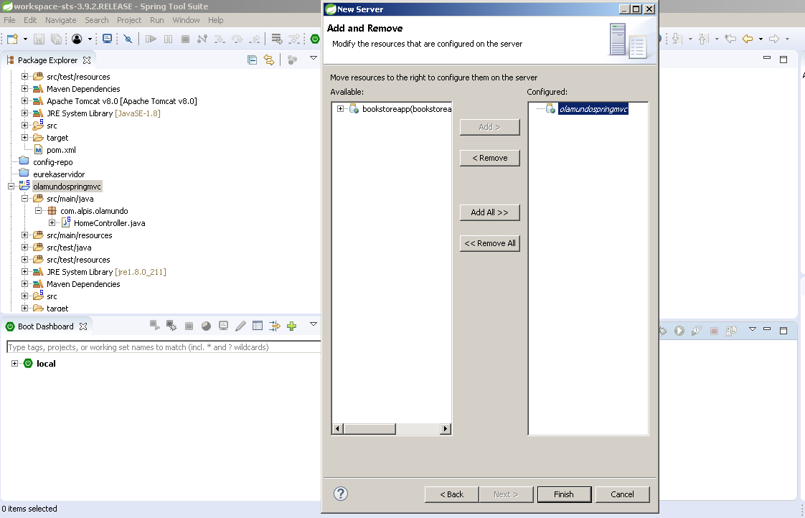
O aplicativo é implantado no servidor se o virmos com o nome do servidor, conforme ilustrado na Figura abaixo:
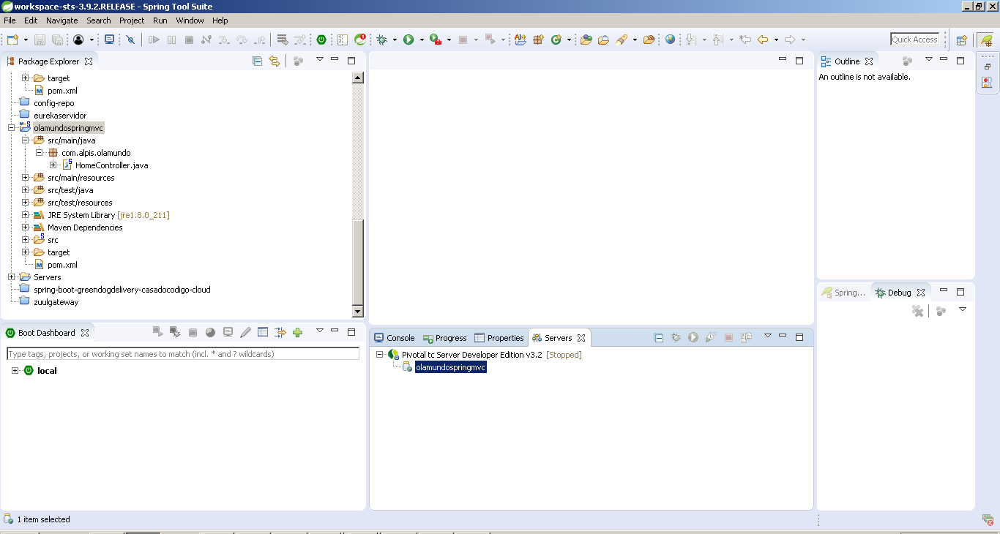
Inicie o servidor e execute o aplicativo usando o URL http://localhost:8080/olamundo
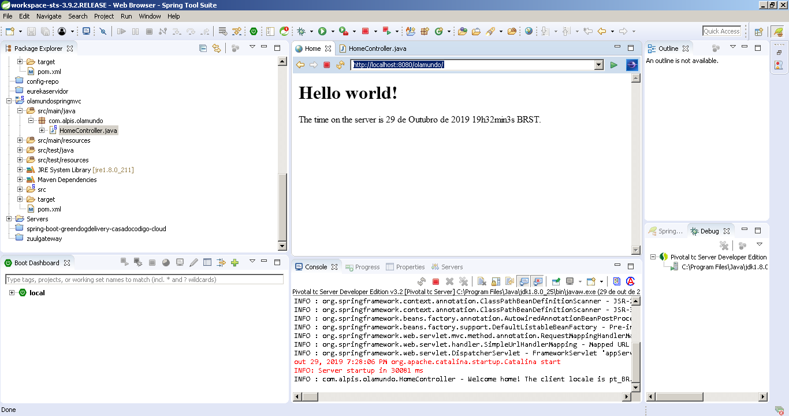
Agora vamos explorar o que foi criado pelo modelo do Spring MVC Project. Expanda as ramificações na visualização Explorador de Projetos para ver como o projeto está estruturado, conforme ilustrado na Figura.
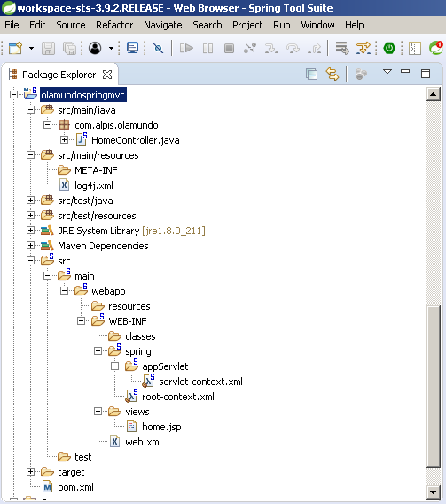
Analisaremos cada um dos componentes ilustrados na Figura acima. A Figura abaixo ilustra o conteúdo do arquivo web.xml gerado.
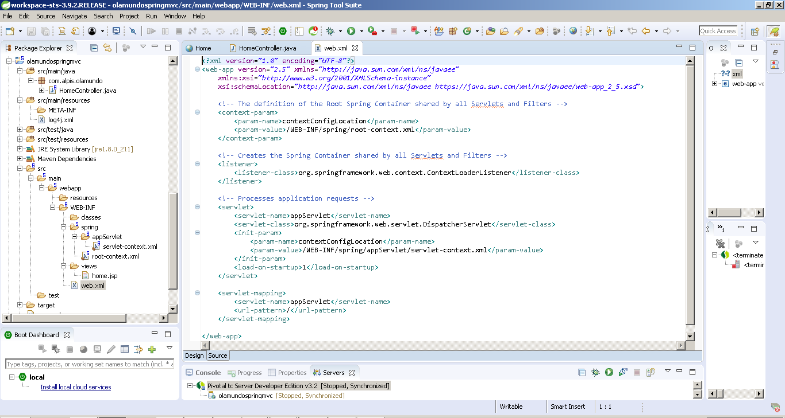
Essa é a configuração típica para um aplicativo baseado no Spring MVC com uma declaração para o seguinte:
- Spring’s ContextLoaderListener
- Spring’s DispatcherServlet
- Arquivo de configuração do Spring root-context.xml
- Arquivo de configuração do Spring servlet-context.xml
- Mapeando a URL para Spring’s DispatcherServlet
Veremos o uso de cada um deles, mas antes disso, modificaremos o web.xml. No projeto de modelo do Spring MVC, o arquivo web.xml gerado suporta o Servlet 2.5. Neste capítulo, usaremos Servlet 3.0 (o tcServer que acompanha o STS é construído sobre o Apache Tomcat 8, que suporta o Servlet 3.0), portanto, também precisamos alterar o cabeçalho XML de 2.5 para 3.0. O código abaixo mostra a tag < web-app> revisada.
<?xml version="1.0" encoding="UTF-8"?> <web-app xmlns="http://java.sun.com/xml/ns/javaee" xmlns:xsi= "http://www.w3.org/2001/XMLSchema-instance" xsi:schemaLocation="http://java.sun.com/xml/ns/javaee http://java.sun.com/xml/ns/javaee/web-app_3_0.xsd" version="3.0"> <context-param> <param-name>contextConfigLocation</param-name> <param-value>/WEB-INF/spring/root-context.xml</param-value> </context-param> <listener> <listener-class>org.springframework.web.context.ContextLoaderListener</listener-class> </listener> <servlet> <servlet-name>appServlet</servlet-name> <servlet-class>org.springframework.web.servlet.DispatcherServlet</servlet-class> <init-param> <param-name>contextConfigLocation</param-name> <param-value>/WEB-INF/spring/appServlet/servlet-context.xml</param-value> </init-param> <load-on-startup>1</load-on-startup> </servlet> <servlet-mapping> <servlet-name>appServlet</servlet-name> <url-pattern>/</url-pattern> </servlet-mapping> </web-app>
- Linhas 2 a 6: na tag <web-app>, o atributo version e a URL correspondente são alterados para a versão 3.0 para indicar ao contêiner da web que o aplicativo da web usará o Servlet 3.0.
- Linhas 10 a 13: na tag <context-param>, é fornecido o parâmetro ConfigLocation de contexto, que define o local do arquivo de configuração WebApplicationContext raiz do Spring.
- Linhas 16 a 18: um ouvinte da classe org.springframework.web.context. ContextLoaderListener está definido. É para o Spring carregar a raiz WebApplicationContext.
- Linhas 21 a 29: Um servlet do expedidor (chamado appServlet) é definido. Usamos o gerado pelo projeto de modelo para a camada de apresentação do aplicativo. O WebApplicationContext para o servlet do expedidor está localizado em /src/main/webapp/WEB-INF/spring/appServlet/servlet-context.xml
O arquivo servlet-context.xml é carregado pelo DispatcherServlet da Spring, que recebe todas as solicitações que entram no aplicativo. O códgio seguinte ilustra servlet-context.xml.
<?xml version="1.0" encoding="UTF-8"?> <beans:beans xmlns="http://www.springframework.org/schema/mvc" xmlns:xsi="http://www.w3.org/2001/XMLSchema-instance" xmlns:beans="http://www.springframework.org/schema/beans" xmlns:context="http://www.springframework.org/schema/context" xsi:schemaLocation="http://www.springframework.org/schema/mvc http://www.springframework.org/schema/mvc/spring-mvc.xsd http://www.springframework.org/schema/beans http://www.springframework.org/schema/beans/spring-beans.xsd http://www.springframework.org/schema/context http://www.springframework.org/schema/context/spring-context.xsd"> < annotation-driven /> < resources mapping="/resources/**" location="/resources/" /> <beans:bean class="org.springframework.web.servlet.view.InternalResourceViewResolver"> <beans:property name="prefix" value="/WEB-INF/views/" /> <beans:property name="suffix" value=".jsp" /> </beans:bean> <context:component-scan base-package="com.alpis.alomundo /> </beans:beans>
- Linha 17: <annotation-driven/> instrui a estrutura a usar uma abordagem baseada em anotações para verificar arquivos nos pacotes. Portanto, podemos usar a anotação @Controller para a classe controller em vez de declarar elementos XML.
- Linha 21: <resources mapping = ... /> mapeia recursos estáticos diretamente com solicitações HTTP GET. Por exemplo, recursos de imagens, JavaScript e CSS não precisam passar por controladores.
- Linhas 25 a 28: Esta declaração de bean informa à estrutura como localizar arquivos JSP físicos de acordo com os nomes lógicos de exibição retornados pelos controladores, anexando o prefixo e o sufixo a um nome de exibição. Por exemplo, se o método de um controlador retornar o nome da visualização lógica local, a estrutura encontrará um arquivo físico home.jsp no diretório /WEB-INF /views
- Linha 30: <context: component-scan ... /> informa à estrutura quais pacotes devem ser verificados ao usar uma estratégia baseada em anotações. Aqui, o framework varrerá todas as classes no pacote com.alpis.alomundo. Quando o aplicativo cresce, você pode adicionar mais configurações para business beans, DAOs, transações e assim por diante.
Agora que temos a infraestrutura instalada para detectar o controlador que manipulará a solicitação, é hora de olhar para o controlador.
package com.alpis.olamundo;
import java.text.DateFormat;
import java.util.Date;
import java.util.Locale;
import org.slf4j.Logger;
import org.slf4j.LoggerFactory;
import org.springframework.stereotype.Controller;
import org.springframework.ui.Model;
import org.springframework.web.bind.annotation.RequestMapping;
import org.springframework.web.bind.annotation.RequestMethod;
/**
* Handles requests for the application home page.
*/
@Controller
public class HomeController {
private static final Logger logger = LoggerFactory.getLogger(HomeController.class);
/**
* Simply selects the home view to render by returning its name.
*/
@RequestMapping(value = "/", method = RequestMethod.GET)
public String home(Locale locale, Model model) {
logger.info("Welcome home! The client locale is {}.", locale);
Date date = new Date();
DateFormat dateFormat = DateFormat.getDateTimeInstance(DateFormat.LONG,
DateFormat.LONG, locale);
String formattedDate = dateFormat.format(date);
model.addAttribute("serverTime", formattedDate );
return "home";
}
}
- Linha 17: A anotação @Controller é usada para especificar que essa classe é um controlador Spring. DispatcherServlet varre essas classes anotadas em busca de métodos manipuladores mapeados por meio das anotações @RequestMapping.
- Linha 25: a anotação @RequestMapping especifica que o método home() manipulará uma solicitação GET com a URL / (a página padrão do aplicativo).
- Linha 26 a 38: O método home() cria um objeto String para armazenar a data atual com base na localidade atual e adiciona esse objeto ao modelo com o nome serverTime. E, finalmente, o método retorna uma visualização chamada home, que será resolvida pelo resolvedor de visualização especificado no arquivo servlet-context.xml, para localizar o arquivo de visualização real. Em uma classe de controlador, podemos escrever muitos métodos para lidar com URLs diferentes.
@Controller e @RequestMapping e várias outras anotações formam a base para a implementação do Spring MVC. Para definir uma classe de controlador no Spring 3.0 e mais recente, você deve marcar a classe com a anotação @Controller. Quando uma classe anotada pelo @Controller recebe uma solicitação, ela procura um método manipulador apropriado para lidar com a solicitação. Cada método para o qual a solicitação deve ser mapeada é decorado com a anotação @RequestMapping, tornando o método um método manipulador para o qual a solicitação é mapeada por meio de mapeamentos de manipulador.
Como você viu anteriormente, o método home() no HomeController retorna uma visualização chamada home, que é resolvida pelo resolvedor de visualização especificado em servlet-context.xml. Agora é hora de olhar para a view, que é o arquivo home.jsp gerado no diretório /WEB-INF/views. O código abaixo ilustra home.jsp .
<%@ taglib uri="http://java.sun.com/jsp/jstl/core" prefix="c" %>
<%@ page session="false" %>
<html>
<head>
<title>Home</title>
</head>
<body>
<h1>
Hello world!
</h1>
<P> The time on the server is ${serverTime}. </P>
</body>
</html>
Este é um arquivo JSP simples que usa uma expressão EL na linha 12 para imprimir o valor da variável serverTime que é passada pelo controlador. Como você deve ter notado, o STS criou dois arquivos de configuração do Spring: root-context.xml e servlet-context.xml. Ainda não vimos o root-context.xml porque nosso aplicativo Ola Mundo não exige que esse arquivo exiba o conteúdo de home.jsp. Este arquivo está vazio por padrão, conforme ilustrado na figura a seguir:
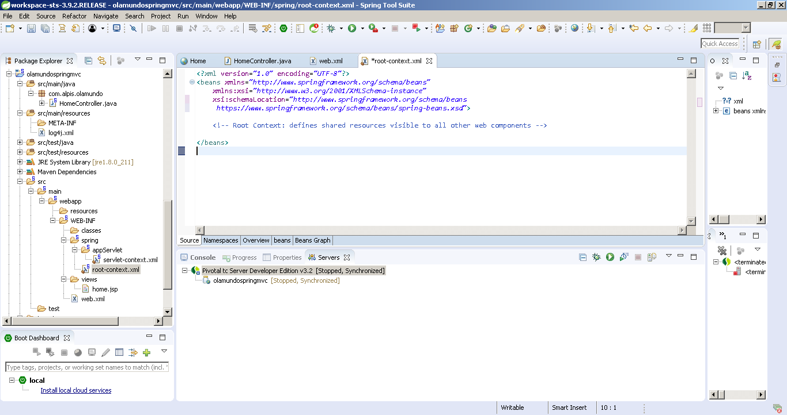
Este arquivo, como o nome sugere, especifica a configuração raiz do contêiner Spring. O arquivo root-context.xml é carregado pelo ContextLoaderListener do Spring após a inicialização do aplicativo, como você aprendeu na seção anterior.
Até agora, examinamos todos os arquivos gerados pelo modelo do Spring MVC Project, portanto você deve estar equipado o suficiente para mergulhar mais fundo, construindo o aplicativo bookstore ao longo do caminho.
Implementando o Spring Web MVC no Aplicativo BookStore
Nesta seção, você aprenderá como desenvolver o aplicativo Web bookstore usando a estrutura do Spring Web MVC. O aplicativo bookstore é um sistema de livraria. Como mencionado anteriormente, todas as solicitações recebidas fluem através do DispatcherServlet. Portanto, como qualquer outro servlet em um aplicativo Java EE, o contêiner Java EE precisa ser informado para carregar esse servlet na inicialização via web.xml. Você deve criar um novo projeto Spring MVC primeiro. O código seguinte ilustra web.xml do aplicativo bookstore.
<?xml version="1.0" encoding="UTF-8"?> <web-app xmlns="http://java.sun.com/xml/ns/javaee" xmlns:xsi= "http://www.w3.org/2001/XMLSchema-instance" xsi:schemaLocation="http://java.sun.com/xml/ns/javaee http://java.sun.com/xml/ns/javaee/web-app_3_0.xsd" version="3.0">bookstore org.springframework.web.servlet.DispatcherServlet contextConfigLocation /WEB-INF/spring/appbookstore/appbookstore-servlet.xml contextConfigLocation /WEB-INF/applicationContext.xml 1 bookstore / *.html *.htm </web-app> /list_book.html
- Linhas 9 a 10: DispatcherServlet é registrado como um servlet chamado booksotre.
- Linha 12 a 13: O arquivo de configuração do Spring pode ser explicitamente especificado no diretório contextConfig Parâmetro de servlet de localização para solicitar ao Spring que carregue as configurações além do <servletname>-servlet.xml padrão
Logo abaixo o código do arquivo appbookstore-servlet.xml:
<?xml version="1.0" encoding="UTF-8"?> <beans:beans xmlns="http://www.springframework.org/schema/mvc" xmlns:xsi="http://www.w3.org/2001/XMLSchema-instance" xmlns:beans= "http://www.springframework.org/schema/beans" xmlns:context="http://www.springframework.org/schema/context" xsi:schemaLocation="http://www.springframework.org/schema/mvc http://www.springframework.org/schema/mvc/spring-mvc.xsd http://www.springframework.org/schema/beans http://www.springframework.org/schema/ beans/spring-beans.xsd http://www.springframework.org/schema/context http://www.springframework.org/schema/ context/spring-context.xsd"> <beans:bean name="/list_book.html" class="com.alpis.bookstore.controller.BookController" /> <beans:bean class="org.springframework.web.servlet.view.InternalResourceViewResolver"> <beans:property name="prefix" value="/WEB-INF/views/" /> <beans:property name="suffix" value=".jsp" /> </beans:bean> </beans:beans>
Assim que o usuário solicita uma lista de livros usando http://localhost:8080/bookstore, a solicitação atinge o mecanismo do servlet, que roteia a chamada para o aplicativo da web bookstore, que é implementado no contêiner do servlet. O arquivo web.xml mostrado fornece o arquivo de boas-vindas que deve atender à solicitação.
<welcome-file-list> <welcome-file>/list_book.html</welcome-file> </welcome-file-list>
A URL no arquivo de boas-vindas corresponde ao padrão de URL que foi registrado para DispatcherServlet e a solicitação é roteada para ele. Com base na configuração disponível em appbookstore-servlet.xml, a solicitação é roteada para um controlador específico, ilustrado na linha 16 do código appbookstore-servlet.xml. Aqui, o arquivo list_book.html é declarado como um bean e mapeado para a classe BookController. Isso significa que se um URL com /list_book.html for solicitado, solicitará ao BookController para lidar com a solicitação. O próximo código ilustra o BookController baseado em interface. Mais tarde, você verá como substituir esse controlador baseado em interface por um controlador anotado.
package com.alpis.bookstore.controller;
import javax.servlet.http.HttpServletRequest;
import javax.servlet.http.HttpServletResponse;
import org.springframework.web.servlet.ModelAndView;
import org.springframework.web.servlet.mvc.Controller;
import com.alpis.bookstore.service.BookService;
public class BookController implements Controller{
@Override
public ModelAndView handleRequest(HttpServletRequest arg0,
HttpServletResponse arg1) throws Exception {
BookService bookservice = new BookService();
ModelAndView modelAndView = new ModelAndView("booklist");
modelAndView.addObject("booklist", bookservice.getBookList());
return modelAndView;
}
}
O controlador instancia o BookService responsável por retornar os dados do livro necessários. ModelAndView("booklist") chama a exibição chamada booklist passando booklist para a visualização Spring identificando qual visualização deve ser retornada ao usuário. Nesse caso, o BookController retorna um objeto ModelAndView chamado booklist. O fragmento do resolvedor de visualização em appbookstore-servlet.xml é mostrado aqui:
<beans:bean class="org.springframework.web.servlet.view.InternalResourceViewResolver"> <beans:property name="prefix" value="/WEB-INF/views/" /> <beans:property name="suffix" value=".jsp" /> </beans:bean>
Com base na definição, o resolvedor de visualizações localiza o arquivo usando o seguinte mecanismo:
Prefix + ModelAndView nome + suffix, que traduz para : /WEB-INF/views/booklist.jsp
ModelAndView.addObject("booklist", bookService.getBookList ()) adiciona os dados do livro retornados por getBookList() ao modelo chamado booklist, que é formatado e renderizado pela view.
Finalmente, o mecanismo do servlet renderiza a resposta por meio do JSP especificado ilustrado no código abaixo.
<%@page contentType="text/html" pageEncoding="UTF-8"%>
<%@ taglib prefix="c" uri="http://java.sun.com/jsp/jstl/core"%>
<!DOCTYPE html>
<html>
<head>
<meta http-equiv="Content-Type" content="text/html; charset=UTF-8">
<title>Your Book store</title>
</head>
<body>
<h1>Books List</h1>
<table border="1">
<tr>
<th align="left">Author</th>
<th align="left">Book Title</th>
</tr>
<c:forEach items="${booklist}" var="book">
<tr>
<td>${book.author.authorNome}</td>
<td>${book.bookTitle}</td>
</tr>
</c:forEach>
</table>
</body>
</html>
A Figura abaixo ilustra a estrutura de diretórios do aplicativo bookstore e a saída da lista de Autores e Livros configurado na classe BookService, além do servidor TomCat8 com o aplicativo appbookstore funiconando.
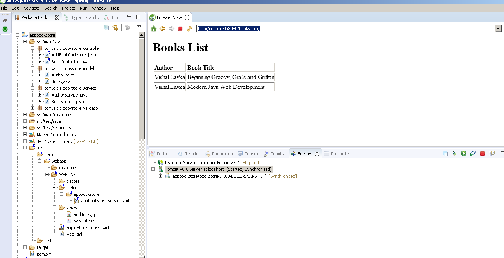
Até agora esse aplicativo funcionou com um controlador baseado em interfaces. Vamos substituí-lo por um controlador baseado em anotações.O código seguinte ilustra o BookController baseado em anotações
package com.alpis.bookstore.controller;
import com.alpis.bookstore.service.BookService;
import org.springframework.stereotype.Controller;
import org.springframework.web.bind.annotation.RequestMapping;
import org.springframework.web.bind.annotation.RequestMethod;
import org.springframework.web.servlet.ModelAndView;
@Controller
@RequestMapping("/list_book.html")
public class BookController {
@RequestMapping(method = RequestMethod.GET)
public ModelAndView bookListController() {
BookService bookManager = new BookService();
ModelAndView modelAndView = new ModelAndView("booklist");
modelAndView.addObject("booklist", bookManager.getBookList());
return modelAndView;
}
}
- Linha 8: em um aplicativo baseado em anotações, um controlador de formulário é criado usando o @Controller. O @Controller indica que uma classe específica desempenha o papel de um controlador. O @Controller também permite a detecção automática, alinhada com o suporte geral do Spring para detectar as classes de componentes no caminho da classe e registrar automaticamente as definições de bean para elas. Neste exemplo, a anotação @Controller indica que a classe BookListControler é uma classe de controlador.
- Linha 9: @RequestMapping é usado para mapear URLs como /list_book.html em uma classe inteira ou em um método de tratamento específico. @RequestMapping no nível da classe indica que todos os métodos de manipulação neste controlador são relativos ao caminho /list_book.html.
- Line 12: @RequestMapping no nível do método indica que o método aceita apenas solicitações GET; em outras palavras, um HTTP GET para /list_book.html envolve bookListController().
O próximo código ilustra o appbookstore-servlet.xml modificado para que o BookController baseado em anotações seja descoberto.
<?xml version="1.0" encoding="UTF-8"?> <beans:beans xmlns="http://www.springframework.org/schema/mvc" xmlns:xsi="http://www.w3.org/2001/XMLSchema-instance" xmlns:beans= "http://www.springframework.org/schema/beans" xmlns:context="http://www.springframework.org/schema/context" xsi:schemaLocation="http://www.springframework.org/schema/mvc http://www.springframework.org/schema/mvc/spring-mvc.xsd http://www.springframework.org/schema/beans http://www.springframework.org/schema/beans/spring-beans.xsd http://www.springframework.org/schema/context http://www.springframework.org/schema/context/spring-context.xsd"> <context:component-scan base-package="com.alpis.bookStore.controller" /> <beans:bean class="org.springframework.web.servlet.view.InternalResourceViewResolver"> <beans:property name="prefix" value="/WEB-INF/views/" /> <beans:property name="suffix" value=".jsp" /> </beans:bean> </beans:beans>
- Linha 16: <context: component-scan> do servlet do despachante registra @ classes anotadas pelo Controller como beans. A classe BookListController é descoberta e registrada automaticamente como um bean.
Trabalhando com Formulários Usando Anotações
O processamento de formulários é bastante simplificado com a configuração orientada a anotações no Spring Web MVC.O Spring elimina a necessidade de manipulação tradicional de formulários por meio do mecanismo de ligação de dados que preenche automaticamente objetos Java do formulário enviado e suporta relatórios de validação e erro. A Figura abaixo ilustra os novos arquivos adicionados à estrutura de diretórios do bookstore.E o código seguinte demonstra o uso de um formulário e o processamento dos dados inseridos pelo usuário.
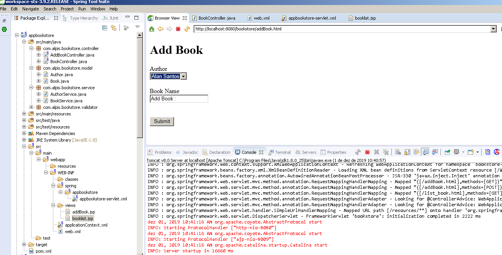
É adicionado um novo controlador, AddBookController, que cuida de todo o processamento do formulário usando anotações. O código abaixo ilustra o AddBookController.
package com.alpis.bookstore.controller;
import java.util.List;
import org.springframework.stereotype.Controller;
import org.springframework.ui.ModelMap;
import org.springframework.validation.BindingResult;
import org.springframework.web.bind.WebDataBinder;
import org.springframework.web.bind.annotation.InitBinder;
import org.springframework.web.bind.annotation.ModelAttribute;
import org.springframework.web.bind.annotation.RequestMapping;
import org.springframework.web.bind.annotation.RequestMethod;
import org.springframework.web.bind.support.SessionStatus;
import org.springframework.web.context.request.WebRequest;
import com.alpis.bookstore.model.Author;
import com.alpis.bookstore.model.Book;
import com.alpis.bookstore.service.AuthorService;
import com.alpis.bookstore.service.BookService;
@Controller
@RequestMapping("/addBook.html")
public class AddBookController {
@RequestMapping(value="/addBook.html", method = RequestMethod.GET)
public String initForm(ModelMap model) {
Book book = new Book();
book.setBookTitle("Add Book :");
model.addAttribute("book", book);
return "addBook";
}
@InitBinder
public void initBinder(WebDataBinder binder, WebRequest request) {
binder.setDisallowedFields(new String[] {"author"});
Book book = (Book)binder.getTarget();
AuthorService authorService = new AuthorService();
Long authorId = null;
try {
authorId = Long.parseLong(request.getParameter("author"));
} catch (Exception e) {}
if (authorId != null) {
Author author = authorService.getAuthorById(authorId);
book.setAuthor(author);
}
}
@ModelAttribute("authorList")
public List<Author> populateAuthorList() {
AuthorService authorService = new AuthorService();
return authorService.getAuthorList();
}
@RequestMapping(method = RequestMethod.POST)
public String processSubmit(@ModelAttribute("book") Book book, BindingResult result,
SessionStatus status) {
BookService bookService = new BookService();
bookService.createBook(book);
return "redirect:/list_book.html";
}
}
- Linha 20: a classe AddBookController é anotada com @RequestMapping("/addBook.html"), o que significa que todos os métodos nesta classe manipularão a solicitação do URL "/addBook.html".
- Linha 22: A inicialização da ligação é feita anotando o nome do método com @RequestMapping(method= RequestMethod.GET).
- Linha 23: initForm() lida com o tipo de solicitação GET e mostra o formulário de adição de novo livro
- A linha 26: initForm() também adiciona uma nova instância ao mapa do modelo para que a nova instância possa ser associada ao formulário.
- Linha 30: A ligação é definida anotando o nome do método com @InitBinder.
- Anotar métodos do controlador com @InitBinder permite configurar a ligação de dados da web diretamente na classe do controlador. O @InitBinder identifica métodos que inicializam o WebDataBindert que é usado para preencher o comando e formar argumentos de objeto dos métodos manipuladores anotados. Esses métodos init-binder suportam todos os argumentos que o @RequestMapping suporta, exceto os objetos de comando/formulário e os objetos de resultado de validação correspondentes. Os métodos Init-binder declarados não devem ter um valor de retorno. Assim, eles geralmente são declarados como void.
- Linha 31: Os argumentos típicos incluem WebDataBinder em combinação com WebRequest ou java.util.Locale, permitindo que o código registre editores específicos do contexto.
- A ligação de dados é configurada usando a classe WebDataBinder. WebDataBinder é um DataBinder especial para ligação de dados de parâmetros de solicitação da web a objetos JavaBean
- O Spring injeta uma instância dessa classe em qualquer método do controlador que tenha sido anotado com @InitBinder. Este objeto é então usado para definir as regras de ligação de dados para o controlador.
- O WebRequest permite o acesso genérico a parâmetros de solicitação, bem como o acesso a atributos de solicitação / sessão sem vínculos com a API Servlet nativa.
- Linha 32: setDisallowedFields() registra os campos que não são permitidos para ligação.
- Linha 45: Os dados de referência são colocados no modelo para que a visualização do formulário possa acessá-los, anotando o nome do método com @ModelAttribute.
- Quando @ModelAttribute é colocado em um parâmetro de método, ele mapeia um atributo de modelo para o parâmetro de método anotado específico. É assim que o controlador obtém uma referência ao objeto que contém os dados inseridos no formulário.
- A anotação @ModelAttribute informa à estrutura do Spring MVC que a instância authorList deve ser atribuída como uma instância da classe Author e deve ser passada para preencher a AuthorList().
- Linha 51: o envio do formulário é tratado com o nome do método com @RequestMapping(method=RequestMethod.POST)
- Linha 52: processSubmit() aceita solicitações POST; isto é, um HTTP POST para /new_book.html chama processSubmit(). processSubmit() processa os dados do formulário. processSubmit() usa três parâmetros:
- 1º-> @ModelAttribute(value = "book") Book book: a anotação de atributo do modelo informa a estrutura do Spring MVC que a instância do modelo Book deve ser atribuída como uma instância da classe Book e passada ao método processSubmit().
- 2º-> BindingResult result: Spring determina erros, se houver, durante a criação da classe Book. Se encontrar erros, sua descrição será passada para o método como uma instância BindingResult
- 3º-> SessionStatus status: SessionStatus é um identificador de status para marcar o processamento do formulário como concluído.
- Linha 56: O prefixo redirect na instrução de retorno aciona um redirecionamento HTTP de volta ao navegador. Isso é necessário ao delegar a resposta a outro controlador, em vez de apenas renderizar a visualização.
O próximo código ilustra a camada de serviço modificada do aplicativo bookstore para processamento de formulários.
package com.alpis.bookstore.service;
import java.util.LinkedList;
import java.util.List;
import com.alpis.bookstore.model.Author;
import com.alpis.bookstore.model.Book;
public class BookService {
private static List<Book> bookList;
static {
Author author1 = new Author();
author1.setAuthorId((long) 1);
author1.setAuthorName("Vishal Layka");
Book book1 = new Book();
book1.setBookId((long) 1);
book1.setBookTitle("Beginning Groovy, Grails and Griffon");
book1.setAuthor(author1);
Book book2 = new Book();
book2.setBookId((long) 2);
book2.setBookTitle("Modern Java Web Development");
book2.setAuthor(author1);
bookList = new LinkedList<Book>();
bookList.add(book1);
bookList.add(book2);
}
public List<Book> getBookList() {
return bookList;
}
public Book createBook(Book b) {
Book book = new Book();
book.setBookId((long)bookList.size() + 1);
book.setAuthor(b.getAuthor());
book.setBookTitle(b.getBookTitle());
bookList.add(book);
return book;
}
}
O código abaixo ilustra o bookList.jsp modificado do aplicativo bookstore para processamento de formulários.
<%@page contentType="text/html" pageEncoding="UTF-8"%>
<%@ taglib prefix="c" uri="http://java.sun.com/jsp/jstl/core"%>
<html>
<head>
<meta http-equiv="Content-Type" content="text/html; charset=UTF-8">
<title>Your Book store</title>
</head>
<body>
<h1>Books List</h1>
<table border="1">
<tr>
<th align="left">Author</th>
<th align="left">Book Title</th>
</tr>
<c:forEach items="${bookList}" var="book">
<tr>
<td>${book.author.authorName}</td>
<td>${book.bookTitle}</td>
</tr>
</c:forEach>
</table>
<br/>
<a href="addBook.html">Add books.</a>
</body>
</html>
- Linha 25: O controlador de formulário é chamado usando addBook.html, que é mapeado nas linhas 20 e 22 do AddBookController .
- O código abaixo ilustra a nova página JSP do aplicativo bookstore para processamento de formulários que será exibida quando o AddBookController for chamado usando <a href="addBook.html"> Add books. </a> na linha 25 de booklist.jsp.
<%@page contentType="text/html" pageEncoding="UTF-8"%>
<%@ taglib prefix="c" uri="http://java.sun.com/jsp/jstl/core" %>
<%@ taglib prefix="form" uri="http://www.springframework.org/tags/form" %>
<!DOCTYPE html>
<html>
<head>
<meta http-equiv="Content-Type" content="text/html; charset=UTF-8">
<title>Your Book store</title>
</head>
<body>
<h1>Add Book</h1>
<form:form method="post" commandName="book">
Author<br/>
<form:select path="author">
<form:options items="${authorList}" itemValue="authorId" itemLabel="authorName" />
</form:select>
<br/><br/>
Book Name<br/>
<form:input path="bookTitle"/><br/><br />
<br/>
<input type="submit" value="Submit">
</form:form>
</body>
</html>
O código acima ilustra o formulário exibido. Também mostra o uso de tags de formulário do Spring. E a figura abaixo mostra o autor e o titulo do livro adcionado no formulário.
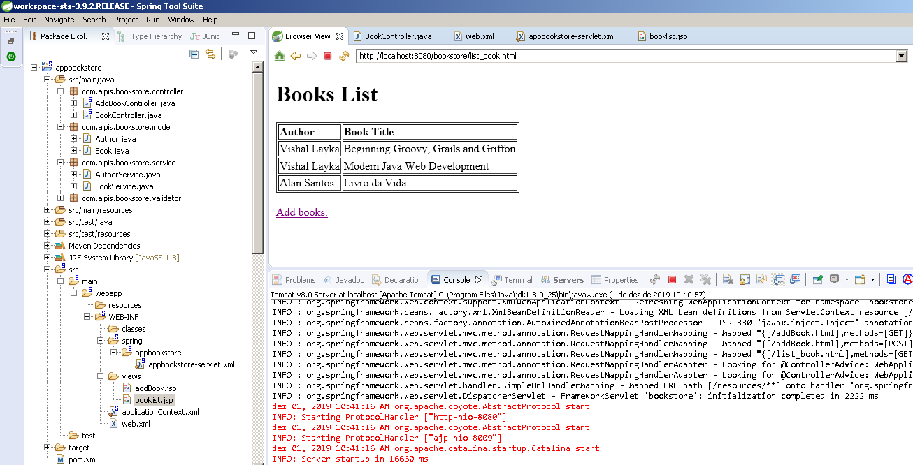
Validação Baseada em Anotações
A seção a seguir demonstra como você pode validar os dados inseridos pelo usuário usando anotações.
A figura abaixo ilustra os arquivos modificados e os arquivos adicionados recentemente no aplicativo.
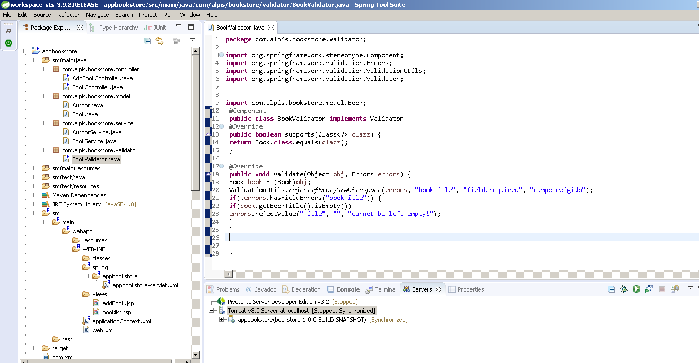
Arquivos modificados e novos arquivos na estrutura de diretórios para validação baseada em anotações
Logo abaixo o código BookValidator:
package com.alpis.bookstore.validator;
import org.springframework.stereotype.Component;
import org.springframework.validation.Errors;
import org.springframework.validation.ValidationUtils;
import org.springframework.validation.Validator;
import com.alpis.bookstore.model.Book;
@Component
public class BookValidator implements Validator {
@Override
public boolean supports(Class<?> clazz) {
return Book.class.equals(clazz);
}
@Override
public void validate(Object obj, Errors errors) {
Book book = (Book)obj;
ValidationUtils.rejectIfEmptyOrWhitespace(errors, "bookTitle", "field.required", "Campo exigido");
if(!errors.hasFieldErrors("bookTitle")) {
if(book.getBookTitle().isEmpty())
errors.rejectValue("Title", "", "Cannot be left empty!");
}
}
}
- Linhas 20 a 23: validações típicas no aplicativo
O controlador chamado AddBookController é atualizado para a validação, conforme mostrado no código seguinte:
package com.alpis.bookstore.controller;
import java.util.List;
import org.springframework.beans.factory.annotation.Autowired;
import org.springframework.stereotype.Controller;
import org.springframework.ui.ModelMap;
import org.springframework.validation.BindingResult;
import org.springframework.validation.annotation.Validated;
import org.springframework.web.bind.WebDataBinder;
import org.springframework.web.bind.annotation.InitBinder;
import org.springframework.web.bind.annotation.ModelAttribute;
import org.springframework.web.bind.annotation.RequestMapping;
import org.springframework.web.bind.annotation.RequestMethod;
import org.springframework.web.bind.support.SessionStatus;
import org.springframework.web.context.request.WebRequest;
import com.alpis.bookstore.model.Author;
import com.alpis.bookstore.model.Book;
import com.alpis.bookstore.service.AuthorService;
import com.alpis.bookstore.service.BookService;
import com.alpis.bookstore.validator.BookValidator;
@Controller
@RequestMapping("/addBook.html")
public class AddBookController {
BookValidator bookValidator;
@Autowired
public AddBookController(BookValidator bookValidator) {
this.bookValidator = bookValidator;
}
@RequestMapping(method = RequestMethod.GET)
public String initForm(ModelMap model) {
Book book = new Book();
book.setBookTitle("Add Book :");
model.addAttribute("book", book);
return "addBook";
}
@InitBinder
public void initBinder(WebDataBinder binder, WebRequest request) {
binder.setDisallowedFields(new String[] {"author"});
Book book = (Book)binder.getTarget();
binder.addValidators(bookValidator);
AuthorService authorService = new AuthorService();
Long authorId = null;
try {
authorId = Long.parseLong(request.getParameter("author"));
} catch (Exception e) {}
if (authorId != null) {
Author author = authorService.getAuthorById(authorId);
book.setAuthor(author);
}
}
@ModelAttribute("authorList")
public List<Author> populateAuthorList() {
AuthorService authorService = new AuthorService();
return authorService.getAuthorList();
}
@RequestMapping(method = RequestMethod.POST)
public String saveBook( @ModelAttribute("book") @Validated Book book, BindingResult result, SessionStatus status) {
if(result.hasErrors()) {
return "addBook";
} if(!result.hasErrors()) {
BookService bookService = new BookService();
bookService.createBook(book);
}
return "redirect:/list_book.html";
}
}
- Linha 31: A classe BookValidator é injetada usando o método setter.
- Linha 63: No saveBook(), validate() do BookValidator é chamado para verificar se os detalhes do livro foram inseridos pelo usuário. validate() recebe o valor do modelo Book e do objeto BindingResult para conter erros, se houver.
- Linha 67 e 71: É feita uma verificação simples paraque não deixe o campo em branco. Se houver erros, o aplicativo exibirá a mesma página com as mensagens de erro. Se não houver erros, ou seja, o usuário inseriu todos os dados corretos, o aplicativo exibirá a lista dos detalhes do livro juntamente com os detalhes do livro recém-inseridos.
Configurando Validador
Agora você deve declarar o validador do URL addBook.html em bookstore-servlet.xml, conforme ilustrado no código abaixo.
<?xml version="1.0" encoding="UTF-8"?> <beans:beans xmlns="http://www.springframework.org/schema/mvc" xmlns:xsi="http://www.w3.org/2001/XMLSchema-instance" xmlns:beans= "http://www.springframework.org/schema/beans" xmlns:context="http://www.springframework.org/schema/context" xsi:schemaLocation="http://www.springframework.org/schema/mvc http://www.springframework.org/ schema/mvc/spring-mvc.xsd http://www.springframework.org/schema/beans http://www.springframework.org/schema/ beans/spring-beans.xsd http://www.springframework.org/schema/context http://www.springframework.org/schema/context/spring-context.xsd"> <context:component-scan base-package="com.alpis.bookstore.controller" /> <beans:bean class="com.alpis.bookstore.validator.BookValidator" /> <beans:bean class="org.springframework.web.servlet.view.InternalResourceViewResolver"> <beans:property name="prefix" value="/WEB-INF/views/" /> <beans:property name="suffix" value=".jsp" /> </beans:bean> </beans:beans>
- Linha 17 A classe BookValidator está definida. O contêiner cria o Classe BookValidator chamando seu construtor.
Logo abaixo veja como fica se mandarmos adcionar um livro com o campo em branco.. É exibido uma mensagem de erro!
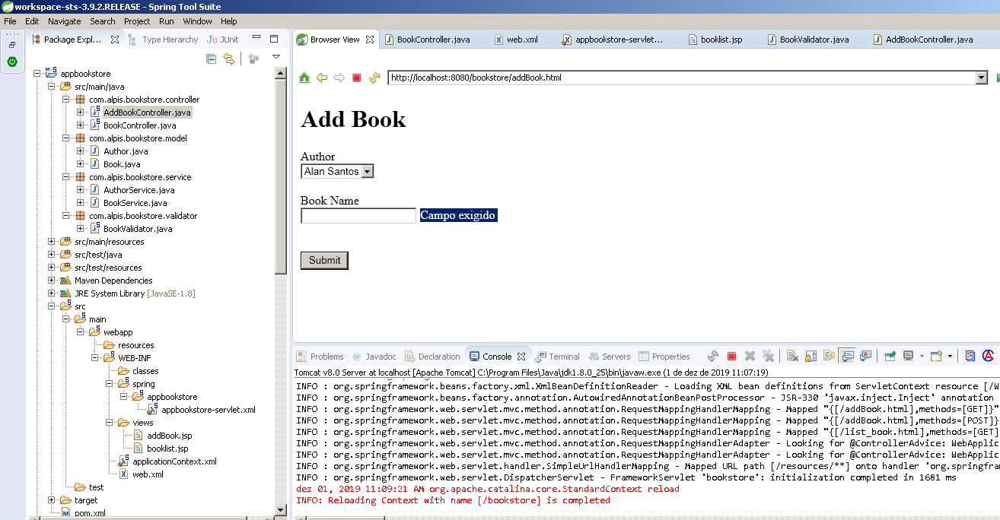